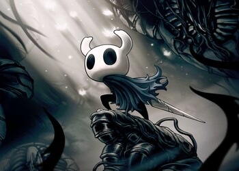
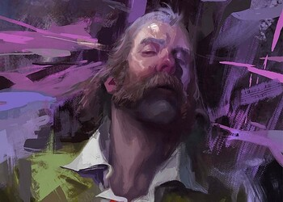
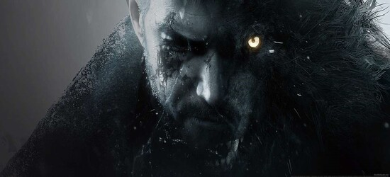

Metal Gear Solid 3: Snake Eater (2004)
Metal Gear Solid 3: Snake Eater — третья игра в серии Metal Gear Solid, созданная под руководством Хидэо Кодзимы. Издана в 2004 году компанией Konami на PlayStation 2. Является приквелом к первой Metal Gear.

Sea Of Thieves (2018)
Игра от студии Rare, мультиплеерная ролевая песочница про пиратов. В ней игроки объединяются в команды, управляя персонажами-пиратами, чтобы вместе путешествовать на парусных кораблях в поисках сокровищ и приключений.

Subnautica 2 (2025)
Subnautica 2 — предстоящая кроссплатформенная кооперативная видеоигра в жанрах приключенческой игры и симулятора выживания с открытым миром, разрабатываемая американской студией Unknown Worlds Entertainment и издаваемая корейской компанией Krafton. Сиквел Subnautica и Subnautica: Below Zero, происходящий спустя некоторое время после событий последней части.

Hollow Knight (2017)
Атмосферный платформер с элементами исследования, действие которого происходит в мрачном, но красивом мире подземного королевства Холлоунест.

Disco Elysium (2019)
Уникальная ролевая игра, в которой игроки берут на себя роль детектива, расследующего убийство в странном и мрачном мире. Игра выделяется своей глубокой нарративной структурой, где каждое решение влияет на развитие сюжета и взаимодействие с персонажами.

Resident Evil Village (2021)
Восьмая часть знаменитой серии хорроров, продолжение истории Итана Уинтерса, который ищет свою дочь в загадочной деревне, наполненной ужасами. Игра сочетает в себе элементы экшена и ужасов, предлагая игрокам исследовать открытый мир и сражаться с различными монстрами.